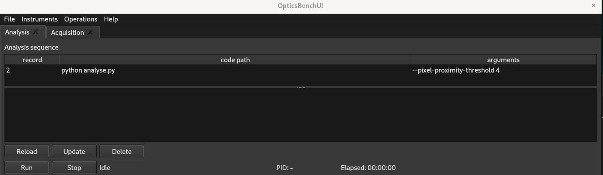

Analysis tasks are external commands executed after or independently from acquisition. Each task is defined in the analysis_sequence table stored in analysis.db3.
| record | Execution order (non-negative). Tasks run in ascending order. |
| code path | Full path to the executable or script to run. Use ENV (or EXPORT) here to declare reusable variables instead of running a command. For variable rows, the cell must contain only ENV or EXPORT. Ordinary rows may still contain a full command line if preferred. |
| arguments | Arguments passed to the command (space-separated). Variable rows use NAME=value assignments here. Later rows can reuse variables as $NAME or ${NAME} in both code path and arguments. Declarations such as ENV NAME=value in the code path cell are not supported. |
Example:
record 0: code path = ENV, arguments =
DATA_ROOT="/data/2026/run 4"
record 1: code path = ${DATA_ROOT}/process.py, arguments =
--input ${DATA_ROOT}/raw.h5
Ordinary command rows may also place the full command line in code path, for example ${DATA_ROOT}/process.py --input ${DATA_ROOT}/raw.h5.
To trigger analysis automatically after a specific acquisition row, add ANALYSIS=START to the acquisition settings column. This will execute the analysis task list in the background.
